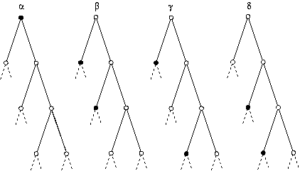

Grigorchuk defines four automorphisms, called α, β, γ, δ, of a binary tree that we describe by the pictures below, depicting in each case the top part of that infinite binary tree. Each of these automorphisms interchanges branches of the tree starting from certain vertices which are marked by black points in the pictures. Branches originating from vertices that are not marked black are not interchanged.
The automorphism α interchanges the two (main) branches starting from the root vertex.
The automorphisms β, γ, and δ interchange only certain branches starting from vertices at distance 1 from the right-most side infinite line. The colouring of these points is periodic with period 3, so in each of the pictures we show only the first three of these points.

The group G generated by α, β, γ, and δ will be called Grigorchuk's group.
gap> TopElement := function(perm,level)
> local blocksize,ims,nbar;
> nbar := List( [1..level], x -> 2 );
> blocksize := Product(nbar{[2..level]});
> ims := Concatenation(List( [1,2],
> i -> [(i^perm-1)*blocksize+1..i^perm*blocksize] ));
> return PermList(ims);
> end;
function( perm, level ) ... end
We need another auxiliary function to determine the elements b(i), c(i),
and d(i).
gap> SequenceElement := function(seq,level)
> local blocksize,i,ims,n,nbar,offset,perm,perms;
> offset := 0;
> ims := [];
> nbar := List( [1..level], i -> 2 );
> blocksize := Product(nbar{[2..level]});
> for i in [1..level-1] do
> n := nbar[i+1]; blocksize := blocksize/n;
> perm := seq[(i -1) mod Length(seq) +1];
> Append(ims,Concatenation(List( [1..n],
> i-> offset + [(i^perm-1)*blocksize+1..i^perm*blocksize] ) ));
> offset := offset + n*blocksize;
> od;
> Add(ims,offset+1);
> return PermList(ims);
> end;
function( seq, level ) ... end
(Note that the functions 'TopElement' and 'SequenceElement' given above
are slight simplifications of the functions Steve Linton gave in his talk
which were designed to handle more general cases.)
Using these we define functions that will, for each level i return a(i),
b(i), c(i), and d(i), respectively. The permutations occurring in the
functions describe the automorphisms of the binary tree that have been
explained above.
gap> a := level -> TopElement((1,2),level); function( level ) ... end gap> b := level -> SequenceElement([(1,2),(1,2),()],level); function( level ) ... end gap> c := level -> SequenceElement([(1,2),(),(1,2)],level); function( level ) ... end gap> d := level -> SequenceElement([(),(1,2),(1,2)],level); function( level ) ... endGrigorschuk's paper states that the subgroup generated by β, γ, and δ is in fact already generated by β and δ. This holds then of course for all our factor groups, too, but let us verify this for levels 2 to 10.
gap> List( [1..10], i -> Size(Group(b(i),c(i))) ); [ 1, 2, 4, 4, 4, 4, 4, 4, 4, 4 ] gap> List( [1..10], i -> Group(b(i),c(i)) = Group(b(i),c(i),d(i)) ); [ true, true, true, true, true, true, true, true, true, true ]So the following function will construct the groups G(i).
gap> G := level -> Group( a(level), b(level), c(level)); function( level ) ... endWe first determine size, nilpotency class, and derived lenght for some factor groups G(i).
gap> List( [1..8], i -> Collected(Factors(Size(G(i)))) ); [ [ [ 2, 1 ] ], [ [ 2, 3 ] ], [ [ 2, 7 ] ], [ [ 2, 12 ] ], [ [ 2, 22 ] ], [ [ 2, 42 ] ], [ [ 2, 82 ] ], [ [ 2, 162 ] ] ] gap> List( [1..8], i -> NilpotencyClassOfGroup(G(i)) ); [ 1, 2, 4, 8, 16, 32, 64, 128 ] gap> List( [1..8], i -> DerivedLength(G(i)) ); [ 1, 2, 3, 3, 4, 4, 5, 5 ]Because of computing times we are a little bit more modest determining the exponent and the number of conjugacy classes.
gap> List( [1..5], i -> Exponent(G(i)) ); [ 2, 4, 8, 8, 16 ] gap> List( [1..5], i -> Length(ConjugacyClasses(G(i))) ); [ 2, 5, 20, 61, 619 ]We look a bit closer at the conjugacy classes of one of the groups, for which we take G(5).
gap> classes := ConjugacyClasses(G(5));; gap> Collected(List( classes, c -> [Order(Representative(c)),Size(c)] )); [ [ [ 1, 1 ], 1 ], [ [ 2, 1 ], 1 ], [ [ 2, 2 ], 1 ], [ [ 2, 4 ], 3 ], [ [ 2, 8 ], 6 ], [ [ 2, 16 ], 6 ], [ [ 2, 32 ], 9 ], [ [ 2, 64 ], 11 ], [ [ 2, 128 ], 9 ], [ [ 2, 256 ], 16 ], [ [ 2, 512 ], 10 ], [ [ 2, 1024 ], 13 ], [ [ 2, 2048 ], 5 ], [ [ 4, 16 ], 8 ], [ [ 4, 32 ], 8 ], [ [ 4, 64 ], 24 ], [ [ 4, 128 ], 29 ], [ [ 4, 256 ], 25 ], [ [ 4, 512 ], 58 ], [ [ 4, 1024 ], 49 ], [ [ 4, 2048 ], 84 ], [ [ 4, 4096 ], 29 ], [ [ 4, 8192 ], 9 ], [ [ 4, 16384 ], 6 ], [ [ 4, 32768 ], 9 ], [ [ 4, 65536 ], 1 ], [ [ 8, 1024 ], 8 ], [ [ 8, 2048 ], 16 ], [ [ 8, 4096 ], 78 ], [ [ 8, 8192 ], 40 ], [ [ 8, 16384 ], 16 ], [ [ 8, 32768 ], 12 ], [ [ 8, 65536 ], 9 ], [ [ 8, 131072 ], 6 ], [ [ 16, 131072 ], 4 ] ]Next we compute the lower central series of G(6), suppressing the output which would be lengthy. We determine the orders of the occurring subgroups. Grigorchuk states that the factors of the lower central series of G are all elementary abelian of order at most 8. We verify this for G(6).
gap> lower := LowerCentralSeries(G(6));; gap> List( lower, h -> Size(h) ); [ 4398046511104, 549755813888, 137438953472, 34359738368, 17179869184, 4294967296, 1073741824, 536870912, 268435456, 67108864, 16777216, 4194304, 1048576, 524288, 262144, 131072, 65536, 32768, 16384, 8192, 4096, 2048, 1024, 512, 256, 128, 64, 32, 16, 8, 4, 2, 1 ] gap> List( [1..Length(lower)-1], > i -> AbelianInvariants(FactorGroup(lower[i],lower[i+1])) ); [ [ 2, 2, 2 ], [ 2, 2 ], [ 2, 2 ], [ 2 ], [ 2, 2 ], [ 2, 2 ], [ 2 ], [ 2 ], [ 2, 2 ], [ 2, 2 ], [ 2, 2 ], [ 2, 2 ], [ 2 ], [ 2 ], [ 2 ], [ 2 ], [ 2 ], [ 2 ], [ 2 ], [ 2 ], [ 2 ], [ 2 ], [ 2 ], [ 2 ], [ 2 ], [ 2 ], [ 2 ], [ 2 ], [ 2 ], [ 2 ], [ 2 ], [ 2 ] ]We do the same for the upper central series.
gap> upper := UpperCentralSeries(G(6));; gap> List( upper, h -> Size(h) ); [ 4398046511104, 549755813888, 137438953472, 68719476736, 17179869184, 8589934592, 4294967296, 1073741824, 268435456, 134217728, 67108864, 33554432, 16777216, 4194304, 1048576, 262144, 65536, 32768, 16384, 8192, 4096, 2048, 1024, 512, 256, 128, 64, 32, 16, 8, 4, 2, 1 ] gap> List( [1..Length(upper)-1], > i -> AbelianInvariants(FactorGroup(upper[i],upper[i+1])) ); [ [ 2, 2, 2 ], [ 2, 2 ], [ 2 ], [ 2, 2 ], [ 2 ], [ 2 ], [ 2, 2 ], [ 2, 2 ], [ 2 ], [ 2 ], [ 2 ], [ 2 ], [ 2, 2 ], [ 2, 2 ], [ 2, 2 ], [ 2, 2 ], [ 2 ], [ 2 ], [ 2 ], [ 2 ], [ 2 ], [ 2 ], [ 2 ], [ 2 ], [ 2 ], [ 2 ], [ 2 ], [ 2 ], [ 2 ], [ 2 ], [ 2 ], [ 2 ] ]We check if upper and lower central series of G(i) coincide.
gap> List(List( [1..6], i -> > LowerCentralSeries(G(i)) = UpperCentralSeries(G(i)) )); [ true, true, true, false, false, false ]Finally we look at the normal subgroup lattices of the groups G(i). We first determine the number of normal subgroups for the groups up to level 6...
gap> grigs := List( [1..6], i -> G(i) );; gap> list := List( grigs, g -> NormalSubgroups(g) );; gap> List( list, n -> Length(n) ); [ 2, 6, 28, 41, 77, 227 ]... and count, how many there are of a given order.
gap> for normals in list do > Print(Collected(List( normals, h -> Size(h) )),"\n"); > od; [ [ 1, 1 ], [ 2, 1 ] ] [ [ 1, 1 ], [ 2, 1 ], [ 4, 3 ], [ 8, 1 ] ] [ [ 1, 1 ], [ 2, 1 ], [ 4, 1 ], [ 8, 3 ], [ 16, 7 ], [ 32, 7 ], [ 64, 7 ], [ 128, 1 ] ] [ [ 1, 1 ], [ 2, 1 ], [ 4, 1 ], [ 8, 1 ], [ 16, 1 ], [ 32, 3 ], [ 64, 3 ], [ 128, 3 ], [ 256, 5 ], [ 512, 7 ], [ 1024, 7 ], [ 2048, 7 ], [ 4096, 1 ] ] [ [ 1, 1 ], [ 2, 1 ], [ 4, 1 ], [ 8, 1 ], [ 16, 1 ], [ 32, 1 ], [ 64, 1 ], [ 128, 1 ], [ 256, 1 ], [ 512, 3 ], [ 1024, 7 ], [ 2048, 5 ], [ 4096, 7 ], [ 8192, 5 ], [ 16384, 5 ], [ 32768, 3 ], [ 65536, 3 ], [ 131072, 3 ], [ 262144, 5 ], [ 524288, 7 ], [ 1048576, 7 ], [ 2097152, 7 ], [ 4194304, 1 ] ] [ [ 1, 1 ], [ 2, 1 ], [ 4, 1 ], [ 8, 1 ], [ 16, 1 ], [ 32, 1 ], [ 64, 1 ], [ 128, 1 ], [ 256, 1 ], [ 512, 1 ], [ 1024, 1 ], [ 2048, 1 ], [ 4096, 1 ], [ 8192, 1 ], [ 16384, 1 ], [ 32768, 1 ], [ 65536, 1 ], [ 131072, 3 ], [ 262144, 7 ], [ 524288, 9 ], [ 1048576, 19 ], [ 2097152, 11 ], [ 4194304, 13 ], [ 8388608, 11 ], [ 16777216, 19 ], [ 33554432, 11 ], [ 67108864, 13 ], [ 134217728, 9 ], [ 268435456, 13 ], [ 536870912, 7 ], [ 1073741824, 7 ], [ 2147483648, 5 ], [ 4294967296, 7 ], [ 8589934592, 5 ], [ 17179869184, 5 ], [ 34359738368, 3 ], [ 68719476736, 3 ], [ 137438953472, 3 ], [ 274877906944, 5 ], [ 549755813888, 7 ], [ 1099511627776, 7 ], [ 2199023255552, 7 ], [ 4398046511104, 1 ] ]We notice that for the lower orders there is just one normal subgroup which hence is characteristic. In each case we therefore ask, how many of the normal subgroups are characteristic. (In order to speed up the Performance of the function 'IsCharacteristicSubgroup' we load the package 'AutPGrp' and and invoke the functions 'AutomorphismGroupPGroup' and 'ConvertHybridAutGroup'.)
gap> LoadPackage("autpgrp");
true
gap> for g in grigs do
> ConvertHybridAutGroup(AutomorphismGroupPGroup(g));
> Print(Collected(List( NormalSubgroups(g),
> h -> IsCharacteristicSubgroup(g,h)) ), "\n");
> od;
[ [ true, 2 ] ]
[ [ true, 4 ], [ false, 2 ] ]
[ [ true, 14 ], [ false, 14 ] ]
[ [ true, 25 ], [ false, 16 ] ]
[ [ true, 77 ] ]
[ [ true, 227 ] ]
The rather surprising result is that in G(5) and G(6) all normal subgroups
are characteristic.
Grigorchuk proves that the Schur multiplier of G is a direct product of
infinitely many groups of order 2. We verify the analogue for G(2) and G(3).
gap> for i in [2..3] do > Print( AbelianInvariantsMultiplier(grigs[i]), "\n"); > od; [ 2 ] [ 2, 2, 2, 2 ]